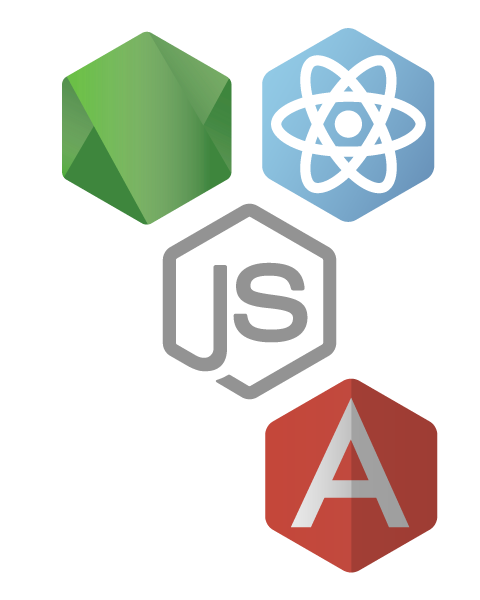
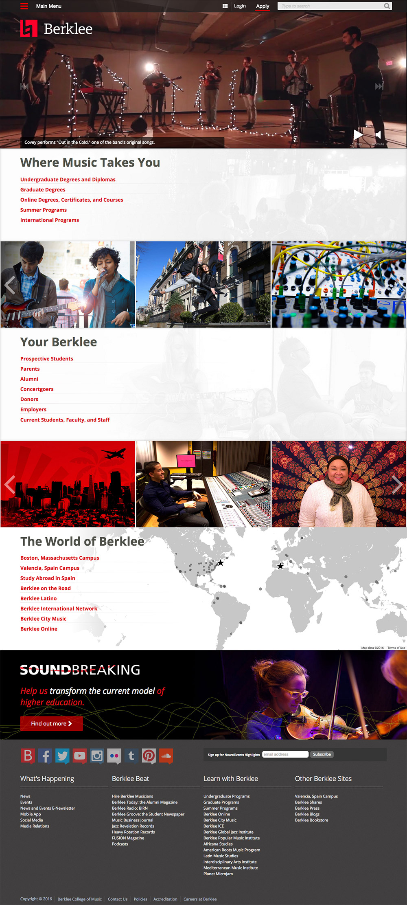

-
From Creative Brief to User Testing
Full-stack coding & design skills allow me to apply myself to any part of a project's pipeline, or even to carry a project through its entire development cycle. Regardless of whether my role involves wireframes, mockups, back-end infrastructure, front-end code or user tests, my objective is to make sure that the client's foundational business goals are met.
-
The Power of Javascript
With the rising popularity of Node.js, Javascript is poised to be one of the most pervasive and flexible languages in use. It can be used to build back-ends (Node.js), asynchronous front-ends (React.js, AngularJS, Socket.io), cross-platform desktop apps (NW.js), and mobile apps (React Native). Javascript is my specialization, and I'm excited about the direction the language is headed.
-
CMS Theming and Module Development
Content managers and small businesses love WordPress for its intuitive UI, and developers love it for its small size and easy-to-use API. Drupal has a steeper learning curve, but its powerful module system allows it to scale in size and complexity to match the needs of large, complex organizations. With years of full-time experience with both platforms, I'm able to leverage their full potential with relative ease.
Resume
-
Languages
Javascript
Long working history. Up-to-date and very fond of ES6/ECMAScript 2015.
PHP
Long working history
HTML5, CSS3, Sass, Compass or Bourbon/Neat/Bitters
Long working history
Ruby
Limited working history
Python
Casual use
Swift & Cocoa
Learning OS X software development
-
Software and Libraries
Node.js
2 years of experience, one major project and several smaller projects.
React.js
2 years of experience, one major project and several smaller projects.
AngularJS
2 years of experience, several small projects.
Drupal
5+ years of experience, several base themes, numerous child themes, and 10+ custom modules.
jQuery
5+ years of experience.
Wordpress
Several years of previous experience, a few themes, a few plugins.
Ruby On Rails
Several years of experience (on and off) developing front-ends.
Git
Daily use of git in a multi-developer environment.
AWS, Heroku, Modulus, Acquia, virtual Debian server
3+ years of occasional experience configuring sites and daily experience working with sites on a variety of platforms.
Blender
Regular use of Blender to create 3D models for printing.
Photoshop
Daily use of Photoshop to create mock-ups and enhance images.
Illustrator
Regular use of Illustrator to create vector graphics.
-
Experience
-
July 2015 to Present
Rajeev V. Singh Designer / Developer / Consultant
- Designing websites and software interfaces for SaaS products.
- Developing sites using Node.js, Socket.io, and MongoDB (using Mongoose).
- Designing 3D printable products.
- Developing OS X applications using Cocoa and Swift 2.
- Programming microcontrollers for IoT devices.
-
April 2013 to July 2015
Berklee College of Music Senior Front-End Developer
- Designed www.berklee.edu and several Berklee subdomains, in accordance with college branding & design guidelines.
- Developed front-ends for www.berklee.edu and several Berklee subdomains in either Drupal or Ruby on Rails.
- Developed Drupal modules and patches to improve and extend the functionality of www.berklee.edu for both users and administrators/content contributors.
- Participated in formulating UX tests and implemented improvements based on findings.
- Documented feature enhancements for both developers and content managers.
-
April 2011 to April 2013
Wright State University Front-End Developer
- Developed an extensible, device-agnostic (responsive) base theme to be used on multiple Drupal sites, notably www.wright.edu and all Wright State college sites and major subdomains.
- Planned and implemented UX tests and surveys.
- Developed sub-themes for departments and colleges, as needed.
- Developed Drupal modules and patches to improve and extend the functionality of www.wright.edu for both users and administrators.
- Created design mock-ups for Wright State colleges and departments.
-
October 2008 to June 2011
The Next Wave Web Designer / Developer
- Designed 2D & 3D art for online advertising and presentations.
- Developed websites using WordPress, Drupal, or Joomla.
- Extended existing Content Management Systems (WordPress, Joomla, and Drupal) with PHP code (custom developed plugins) and themes.
- Managed company web server (Linux+Apache).
-
Portfolio
-
Berklee College of Music: Overview
As chief web designer and senior front-end developer, I spearheaded a comprehensive design and front-end upgrade to Berklee's site. Specifically:
- I outlined the requirements for an updated UI.
- I created wireframes to represent the new UI.
- I created design mock-ups in PhotoShop and Illustrator.
- I acted as an advocate for users while negotiating with stakeholders. My goal was to strike a balance between business objectives and user goals.
- I developed a Drupal parent theme and several Drupal child themes.
- I worked with our project manager to devise and implement unbiased user tests.
-
Jenna Claire

I was contracted by Jenna Claire Handbag Studio in 2009 to completely rebuild and redesign their site. I was the sole web designer and developer on the project (though some graphical elements, including their logo, had already been created by a graphic designer). Together, we created a fun site with an interactive handbag design tool. I built the site in WordPress and created a modules that would allow Jenna Claire to add/modify handbags to the interactive designer without developer assistance.
Users could choose from a range of fabrics for each individual section of the handbag and the image would update automatically. Lighting and shading would also be calculated.
Although this work suffers from age (I would approach this problem very differently today), I feel it was ahead of its time in 2009. This was years before nike.com introduced their custom shoe designer, and I feel that my approach resulted in extremely realistic shading (note: I would love to revive or revisit this project).

-
LitWitKit

LitWitKit was a nice departure from the gray and red color palette of Berklee. I designed the site, created the illustrations (which make use of SVG.JS for fun little animations on mouse hover), and developed the site (back-end and front-end). I used Node.JS along with Socket.io for data synchronization and Mongoose (MongoDB) as a database.
-
Berklee Hub

The Berklee Hub is a notification center that pulls in student data across the campus and allows students to filter and customize the content they receive. It was built in Rails by a team of three. I was responsible for design and front-end development. I built the front-end using React.JS and assisted with the back-end as needed.
-
Drupal Modules

I've written over a dozen Drupal modules to either fulfill needs not covered by existing modules (at the time of their development), or to provide a tailored user experience. Some highlights include:
- Smart Autocomplete (shown above) - supplements a search field with a filterable list of node titles.
- Menu Fields - allows fields to be added to menus and menu items
- Social Media Manager - allows content admins to easily manage social media accounts related to the site, and to inject social media feeds into blocks and pages.
- WYSIWYG Filters - provides content managers with added flexibility in controlling the look, feel, and behavior of content
- Advanced Contextual Filters - adds contextual filters to Views for Workbench Access, Role-based Visibility, advanced Date/time specifications, pager overrides, and more.
- Menu Visibility - allows granular control of menu item visibility based on user role and Workbench Access settings.
- Embedded Help - allows tooltips and slide-out drawers for supplementary help to be added to any field in the admin interface.
- Content Share - sets up an API for responding to API requests for block, content, and menu data. Returns user-specific data, when possible.
- Workbench Access Menus - allows menus to be assigned to Workbench Access Sections. Works in conjunction with Menu Visibility, Workbench Access, and Menu Fields to create a highly individualized user experience.
- Node Info Block - displays node information on a rendered page in a slide-out drawer, for easy access to non-visible details like node ID and hidden taxonomy terms.
-
Berklee Today

Berklee's magazine was – and still is – primarily designed for print. The challenge presented to the Digital Strategy team at Berklee was to adapt that print content into something that would work on the web. The project passed through many hands until it landed with me, and I did my best to create a design that remained true to the original print version but didn't bake artifacts from the original print design into the web UI/design.
I also handled all development related to the project, including Views-driven menus that take advantage of contextual filters and an automated layout system based on article tagging.